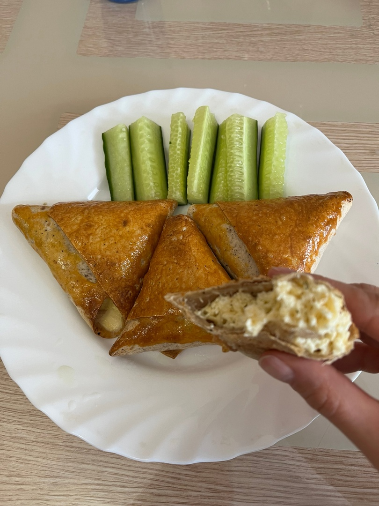

КОНВЕРТИКИ С ТВОРОГОМ
Хрустящие и вто же время нежные, вкусные, сытные конвертики с творогом прекрасно подойдут как на завтрак, так и на закуску. А так же подойдёт для тех, кто следит за своей фигурой!
КБЖУ на 1 порцию - 380/35/13/31Время приготовления - 25 минут
Сложность - легко
ИНГРИДИЕНТЫ НА 1 ПОРЦИИЮ:
- Творог 5% - 200гр
- Яйцо - 1шт
- Лаваш тонкий армянский - 1 шт.
- Сыр - 30гр
- Желток для смазывания лаваша - 1 ст. ложка
- Чеснок, зелень
СПОСОБ ПРИГОТОВЛЕНИЯ:
Шаг 1:
В глубокой миске смешаваем творог, яйцо, натёртый на крупной тёрке сыр, мелко нарубленную зелень. Так же выдавливаем туда чеснок
Шаг 2:
Нарезать лаваш на полоски шириной 6-7см.
Шаг 3:
Творожную массу ложкой выкладываем на край лаваша, затем по диагонали начинаем сворачивать лаваш в одну и вдругую сторону, до конца, получатся треугольнички.
Шаг 4:
Застилаем противень пергаментом, выкладываем конвертики на пергамент, смазываем лаваш желтком.
Шаг 5:
В разогретую до 180°C духовку отправляем запекаться наши конвертики на 20 минут.
Даём немного остынуть, можно подавать с огурцом, и приятного аппетита!